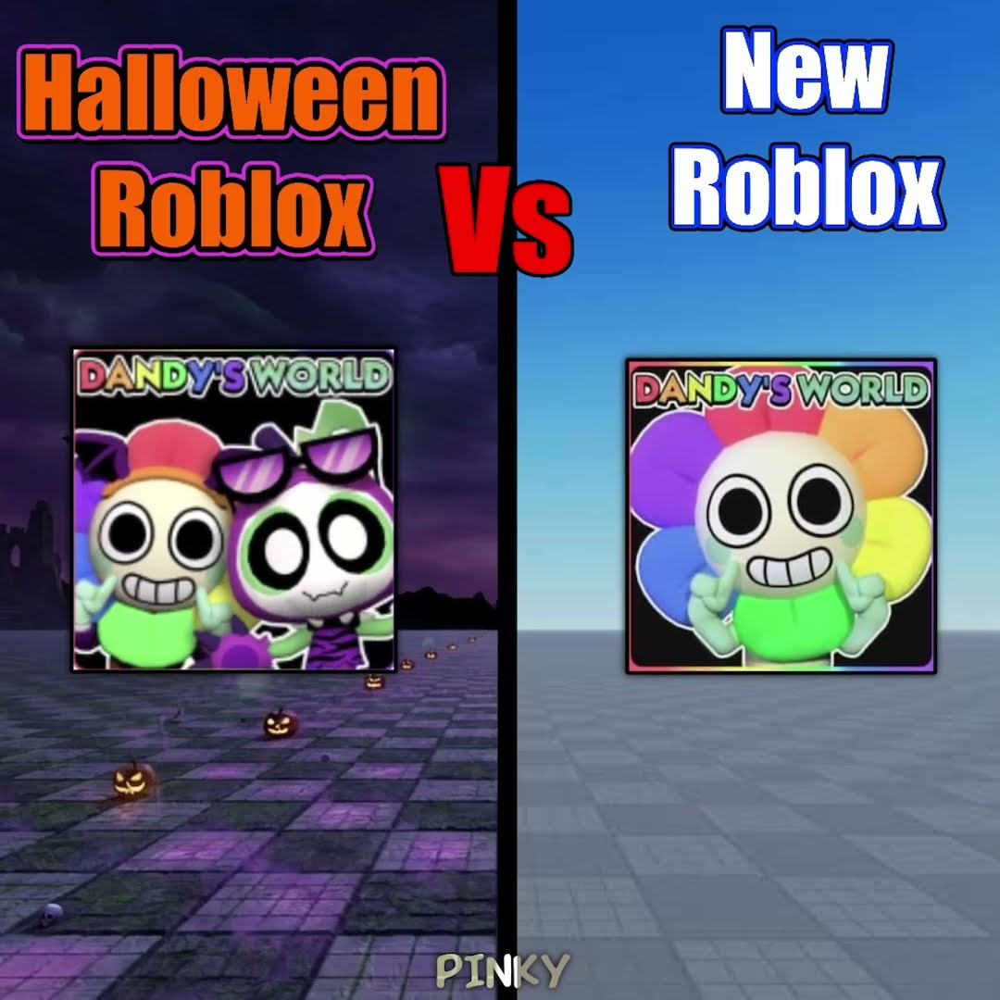

TREND SHORTS19 octombrie 2026
🎃 Halloween Roblox vs Roblox normal: care e mai tare?

Pinky are ~381K views cu „Halloween Roblox VS Normal Roblox… Which Is Better?”. Short-ul pune față în față versiunile normale și cele de Halloween din Dandy's World, 99 Nights și Adopt Me. Ecranul împărțit plus întrebarea „care e mai bun?” aduce comentarii singur, fiindcă fiecare vrea să-și spună părerea.
Ideea VEXU: aceeași zonă din SAE (Steal An Egg), o dată normal și o dată în varianta de Halloween, pe ecran împărțit, cu textul „Care e mai tare? 👇”. TikTok, de căutat în aplicație: „halloween roblox vs normal roblox”.
Follow pe TikTok @vexu_online și abonare pe YouTube la VEXU Online. Follow = Au ce bile!